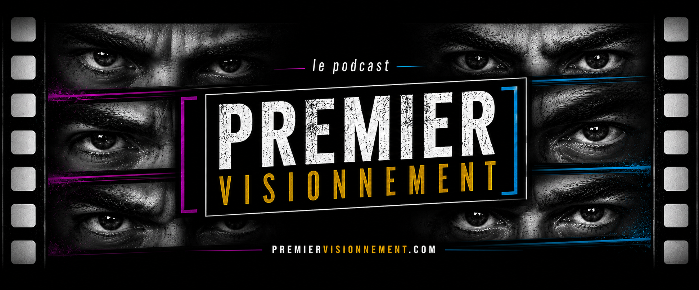

Premier Visionnement
Discussions et rétrospectives autour du cinéma et des séries télévisées.
Catalogue à intégrer
Cinéma, séries télévisées et jeux vidéo : toutes nos productions au même endroit.
Discussions et rétrospectives autour du cinéma et des séries télévisées.
Catalogue à intégrerUne émission distincte consacrée aux jeux vidéo.
Catalogue à intégrerRetrouvez les épisodes par univers et par franchise.
Classement à venirLes films et les discussions réunis dans une même collection.
Classement à venirX-Men, Freddy-Jason, Star Trek et les autres rétrospectives.
Classement à venir